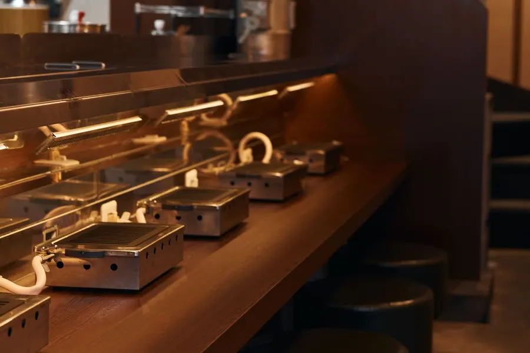

1利益改善
店舗ごとのPLを並べ、原価・人件費・家賃のどこに差があるかを見ます。メニューの価格と構成、仕込みやシフトの組み方まで、利益が残る形に組み直します。
飲食店専門 成果報酬型の経営コンサルティング
「アドバイス」ではなく、「結果」を。
原価が上がった。人件費も上がった。売上は落ちていないのに、月末の残高が増えない。そんな数字の悩みを、自分たちでも飲食店を経営している私たちが一緒に見て、改善の実行まで手を動かします。報酬をいただくのは、数字が良くなったことを確かめてからです。
最初は決算書がなくても大丈夫です。
※ 成果報酬型での支援には事前審査があります。対象範囲・成果の指標・報酬の条件・実費の負担は、契約の前に個別に決めます。

8ブランド
自社ブランド数展開予定を含む
月商5,000万円規模
自社運営事業の売上到達見込み
2024年
運営会社 設立
上記は運営会社である株式会社Basicの自社運営事業に関する数値です。コンサルティング顧客の成果ではありません。
ひとつでも当てはまるなら、改善できる余地はあるかもしれません。
コンサルティングにお金を払う価値があるのは、本来、数字が良くなったときのはずです。だから始める前に「何を、どれだけ、いつまでに改善するか」を一緒に決めて、その結果が出たときにだけ報酬をいただきます。
毎月決まった費用がかかる固定報酬型とちがい、事前に決めた成果が確認できたときだけ報酬が発生します。
※ 成果報酬型での支援には審査があります。成果の指標、測定の期間、報酬率、外部費用の負担などは、契約の前に個別に取り決めます。
無料で経営改善を相談する自社運営店舗の実績
2025年、売上が前の年を大きく下回っていた都内のビストロ（自社運営）。店舗の数字を一から見直し、改善を続けた結果、2026年3〜9月の売上は、7か月すべてで前年の同じ月を上回りました。
売上
+28%
前年同期比（3〜9月）
客単価
+20%
約5,570円 → 6,690円
客数
+6%
前年同期比（3〜9月）
3月
4月
5月
6月
7月
8月
9月
※ 運営会社の自社店舗の実績です（店名は非公開）。POSの売上データをもとに集計（各年3〜9月、特別売上を除く）。コンサルティングのお客さまの事例ではなく、同様の結果を保証するものではありません。
必要なところから、順番に。
店舗ごとのPLを並べ、原価・人件費・家賃のどこに差があるかを見ます。メニューの価格と構成、仕込みやシフトの組み方まで、利益が残る形に組み直します。
黒字なのにお金が足りないのには、理由があります。BS・PL・キャッシュフローを見て、運転資金と返済のバランスを整え、数か月先までの資金繰り表をつくります。
今の借入の組み方、金融機関から見た決算書の見え方、追加で借りられる余地を整理し、説明するための事業計画づくりをお手伝いします。
※ 融資の実行を保証するものではありません。金融機関との融資の媒介は行いません。
次の店に投資していいか、いつ出すか。投資回収の見込みと、既存店や本部にかかる負担を数字にして判断します。



株式会社Basicは、東京で飲食店を経営している会社です。閉めようとしていた店を引き継いだり、新しい業態をゼロから立ち上げたり。仕入れの交渉も、スタッフの採用も、金融機関とのやりとりも、自分たちでやっています。だから提案するのは、自分たちの店で実際に回してきたやり方です。資料を渡して終わりにはせず、数字が動いたかを毎月一緒に確かめます。
| Bistro Bolero | 中目黒・ビストロ | 季節の食材と自然派ワインのビストロ。事業承継により運営。 |
|---|---|---|
| 中目黒 弥之助 | 中目黒・創作和食 | 居酒屋の気軽さで割烹の一皿を。新規業態として立ち上げ。 |
| 清田焼肉店 | 下北沢・焼肉 | タンとハラミにこだわる大阪焼肉。 |
| かつや 恒之助 | 浅草・とんかつ | 素材と火入れで勝負するとんかつ専門店。 |
| Bardebis | 恵比寿・ビストロスパニッシュ | 2011年創業のバルを承継し、業態をリニューアル。 |
| このすけ | 池尻大橋・せいろ居酒屋 | せいろ料理と飯と酒の店。2026年11月オープン予定。 |
| ポルテ | 大手町・ベーカリー・ビストロ | ベーカリーとビストロの店。オープン予定。 |
| 非公開 | 中目黒・ビストロ | 店名は非公開。 |
報酬は、事前に決めた改善成果に応じて。
※ 具体的な報酬率や期間は、個別のご提案のときにご説明します。季節変動や新規出店、一時的な損益などの影響は、必要に応じて事前に決めた方法で調整します。支援にともなう実費が発生する場合は、別途ご負担いただくことがあります（内容は事前にご説明します）。改善の対象・指標・基準の数字・測定期間・報酬の条件・実費の負担・契約の終了条件は、始める前にすべて書面で取り決めます。
無料で経営改善を相談する飲食店を経営する事業者向けの、成果報酬型の経営改善コンサルティングです。店舗別PL・原価・人件費・BS・キャッシュフローを分析し、利益改善・資金繰り改善・財務戦略・多店舗展開について、改善施策の実行まで伴走します。運営は、自社でも複数の飲食ブランドを経営する株式会社Basicです。
成果報酬型の対象となる支援では、契約で定めた成果が確認されなければ、対象のコンサルティング報酬は発生しません。成果報酬型の適用には事前審査があり、適用条件や実費負担については契約前にご説明します。
はい。現在飲食店を経営されている方であればご相談いただけます。支援の受託可否は、内容を確認したうえで判断します。
はい。赤字の原因分析や改善の可能性についてご相談いただけます。
初回相談のお申し込みでは必要ありません。詳細な分析が必要な場合には、秘密保持や資料の取り扱いについて確認したうえで、ご提出をお願いすることがあります。
課題、改善対象、成果指標、支援範囲によって異なります。契約前に、成果の算定方法と報酬の条件をご説明し、合意したうえで支援を開始します。
支援開始前に、改善対象となる店舗・事業、改善するKPI（店舗営業利益など）、改善前の基準数値、測定期間を合意します。季節変動や新規出店、一時的な損益などの影響は、事前に合意した方法で調整します。
融資の実行を保証するサービスではありません。また、金融機関との融資の媒介は行いません。財務状況の分析や資金計画など、経営判断に必要な助言を行います。
経営状況の分析、改善計画の立案、実行に向けた助言・伴走など、契約で定めた範囲を支援します。
お預かりする情報は、適切な管理のもとで取り扱います。必要に応じて、秘密保持契約の締結についてもご相談いただけます。
本サービスは、すでに飲食店を経営されている事業者向けです。開業前の方のご相談はお受けしていません。
売上、利益、借入、資金繰り、次の出店。今いちばん気になっていることから、気軽に書いてください。
フォームが表示されない場合はこちらから開いてください。 内容を確認して、担当者からご連絡します。